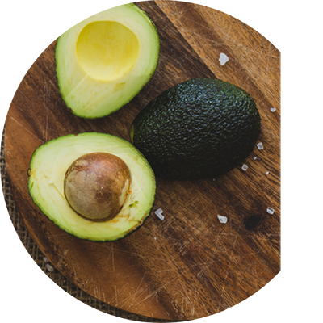
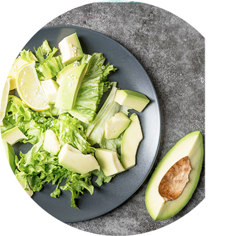

酪梨是甚麼?
酪梨被世界稱為森林的butter
也是全球公認最為營養的水果,小小顆酪梨的脂肪量高達5-8克
butter般柔軟的質感和味道更是令許多注重健康飲食的人喜愛
酪梨原於熱帶氣候地區,臺灣收成為七月至隔年二月,九月為高峰期
酪梨的好處?
酪梨是非常難得的優質脂肪來源
酪梨含有豐富的單元不飽和脂肪和多元不飽和脂肪
可以減少心臟病和中風的風險，降低人體低密度脂蛋白膽固醇
酪梨比其他食物還多的可溶性纖維,延長飽足感達到體重控制

酪梨如何吃?
市面販售酪梨多為未成熟的綠果實
買回需放置數日等待果實成熟,千萬不能冷藏!會無法成熟的
酪梨依品種分成「青皮種」、「紅皮種」兩種
青皮果不會轉色，因此要以觸感判斷。摸起來已軟，即可吃了
紅皮果會由綠轉為深褐，表皮從光滑油亮慢慢微皺變黯淡
成熟的酪梨搖一搖，還可以感受果核已分離的晃動感